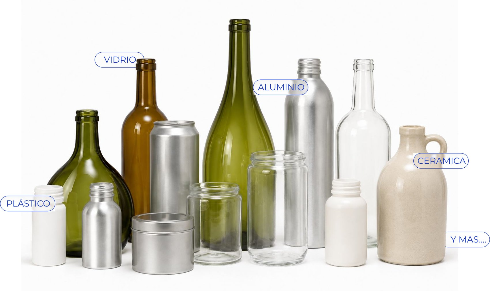

Trabajamos sobre diferentes modelos y materialidades de envases y desarrollamos la solución de decoración según el resultado buscado.

Te ayudamos a encontrar el envase ideal, trabajando junto a los principales fabricantes y proveedores de Argentina y del exterior.
Si ya tenés tu propio envase, lo analizamos y te asesoramos sobre las posibilidades de decoración.
Cada envase tiene características que pueden influir en la técnica, el proceso y el resultado final. Analizamos estos factores antes de definir cómo decorarlo.
Hombros, diámetros, curvas y zonas de impresión determinan qué áreas pueden decorarse y qué posibilidades ofrece cada técnica. Para diseños complejos, una geometría adecuada facilita el proceso.
La geometría, los diámetros, las tolerancias y otras características del envase pueden influir en la velocidad y estabilidad del proceso. El centrado automático, por ejemplo, puede facilitar el posicionamiento.
La composición y el tratamiento superficial influyen en la adherencia de la tinta y el resultado de la decoración. Analizamos estas características para determinar la preparación necesaria.
El tipo de embalaje (palletizado, cajas, separadores) debe proteger la decoración durante las etapas posteriores de llenado, transporte y manipulación.
La forma, dimensiones y características del envase pueden influir en su transporte, almacenamiento y manipulación. Trabajamos junto a proveedores y transportistas.
Si el envase requiere llenado, analizamos cómo se realiza y las condiciones que genera este proceso, ya que puede influir en la resistencia que debe tener la pintura seleccionada.
Cada producto y marca puede requerir normas específicas y criterios de sustentabilidad. Evaluamos materiales, tintas y procesos que cumplan con los requisitos técnicos y ambientales.
Consideramos cómo será utilizado el envase por el consumidor final. Manipulación, lavado, contacto y resistencia pueden influir en la elección de materiales y técnicas.
Diversidad de técnicas para un mismo punto de partida. Elegí una del menú para ver su detalle, variantes y con qué se combina.
Impresión directa sobre el envase mediante tinta, para reproducir textos, logotipos e imágenes con precisión, en uno o varios colores.
Se aplican distintas pinturas según el resultado buscado. El tipo de tinta define cuántos colores admite el diseño, qué resistencia tiene y qué tan cerca del cierre puede llegar la impresión.
Aplicación de revestimiento con soplete sobre toda la superficie del envase, con un espectro de color amplio y varios tipos de acabado.
Es la técnica más versátil en materiales: funciona igual sobre vidrio, plástico, aluminio o cerámica. Se puede pintar la botella entera o evitar el pico, para que no haya contacto con el líquido al consumir.
Transferencia de una película decorativa mediante calor y/o presión, ideal para acabados metálicos y detalles finos.
Puede aplicarse directamente sobre el vidrio o sobre una superficie tratada previamente con coating, según el desarrollo y la geometría del envase. Permite trabajar en oro, plata y otros acabados metalizados, con tipografías y composiciones de alta precisión.
Metalización de toda la superficie del envase mediante deposición al vacío. El acabado de mayor impacto visual de las cuatro técnicas.
Cubre la totalidad de la botella, o se puede evitar la boca para que no haya contacto con el líquido. Es un proceso más exigente que el coating, con menor capacidad de unidades, pensado para desarrollos premium. Permite lograr distintas tonalidades dentro del efecto metalizado, y se le puede aplicar serigrafía encima.
Ninguna técnica está limitada a usarse sola. Así es como suelen encadenarse en un desarrollo real.
Estudiamos cada proyecto en conjunto con vos, con confidencialidad absoluta en todo el proceso.
Nos contás qué querés lograr.
Analizamos envase, diseño, técnica y acabados.
Desarrollamos muestras y validamos el resultado.
Llevamos el desarrollo a escala industrial.